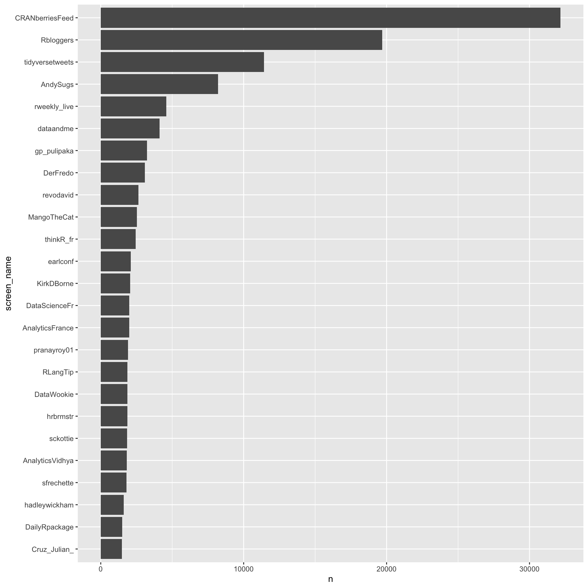
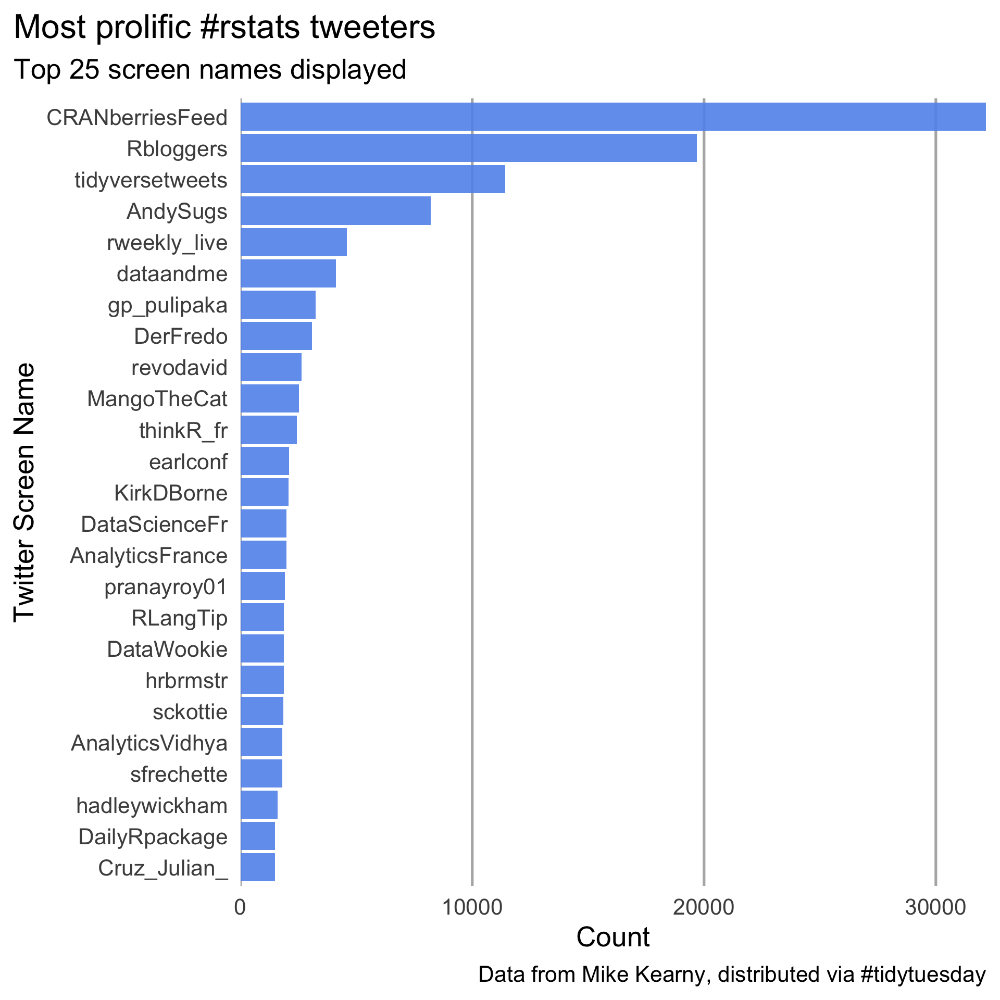
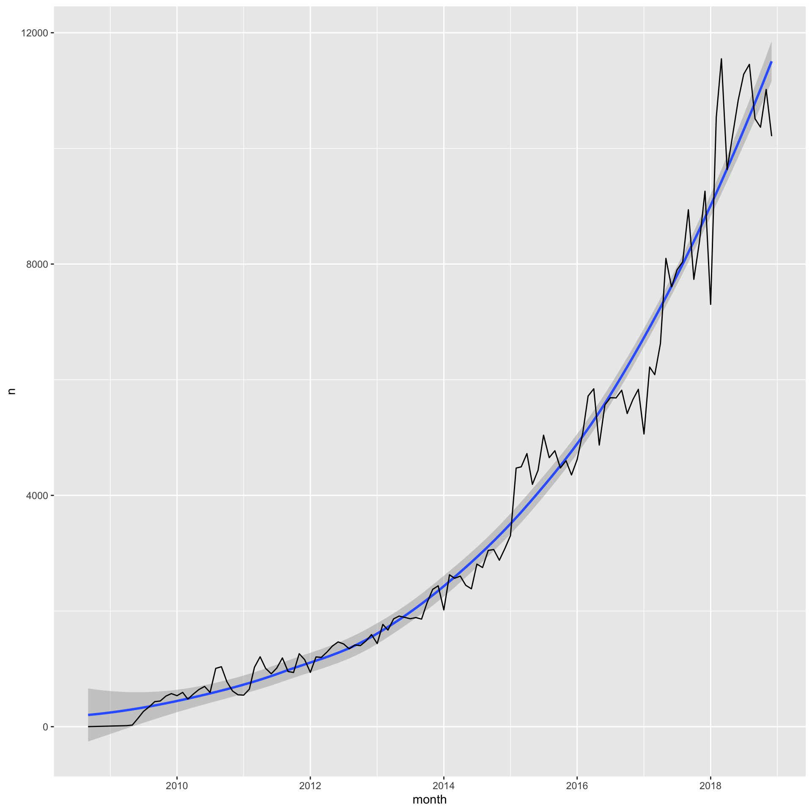
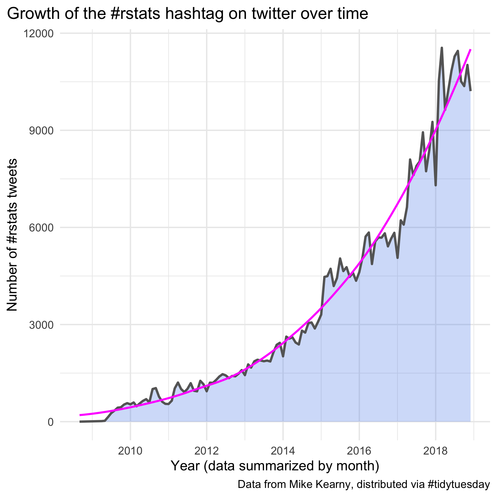

Lab 1
Collaborating on GitHub
Assigned 1/8/19, Due 1/13/19
Overview
The purpose of this lab is to get your working with git and GitHub collaboratively, as well as to refresh some basic {dplyr} skills. You should work together in groups of 3-4. At least one person in your group should have prior experience with git/GitHub. The basics of the lab are to:
- Create a shared repo
- Create an R Markdown document
- Work on a few different data visualizations together
- Different people make different commits
- Submit a link to the repo through Canvas when you’ve completed the lab
- I check the commit history, and give each person credit
Data
We’ll work with Week 1 of the #tidytuesday data for 2019, specifically the #rstats dataset, containing nearly 500,000 tweets over a little more than a decade using that hashtag.
Commits
Glance through the commits below. Each person should be responsible for at least one commit. Commit 1 must be completed first. However, please work on Commits 2 4 simultaneously (one person working on each commit). Commits 3/5 cannot be completed until after Commits 2/4, respectively.
Note: You may end up with a merge conflict. That’s okay, we’re here to practice. I like gitkraken for managing merge conflicts (see here) but you can use whatever works best for you.
Commit 1
- Create a shared GitHub repo
- Create an RStudio project
- Create a folder in the repo called “data” and place the corresponding data there
- Initialize a new R Markdown document
- The data are available here. Download the data and write the code to read it into R.
- Commit and push all new files/modification to the repo
Commit 2
First pull Commit 1, then reproduce the following figure.
Some guidance:
- You’ll want to count the number of times a screen name appears and select only the top 25.
- Consider arranging in descending order, then using
dplyr::slice
- Consider arranging in descending order, then using
- Make the screen name a factor, ordered according to the number of times it appears.
- Consider
forcats::fct_reorder
- Consider
coord_flipwill be your friend here

Commit 3
- Style the plot so it (mostly) matches the below. (Note it does not have to be perfect)

Commit 4
Create the following figure.
Some guidance:
- First create a
monthvariable that rounds thecreated_atcolumn to the nearest month. You might considerlubridate::round_date. - Restrict the count to prior to 2019. I would recommend using
lubridate::as_datetime("2019-01-01 00:00:00"), or just restricting the x-axis throughggplot - Count the number of rows (tweets) in the dataset for each month

Commit 5
- Modify the plot so it (mostly) matches the below. (Note it does not have to be perfect)

Finishing up
It is expected that this lab will take you more time that the 80 minutes we have in class. Class time should be used to clarify any points of confusion and if you run into issues after class, please get in touch with me so we can arrange a time to meet and I can help you.
Once you have finished, please go to Canvas and submit a link to your shared repo. Credit will be awarded based on the commit history.